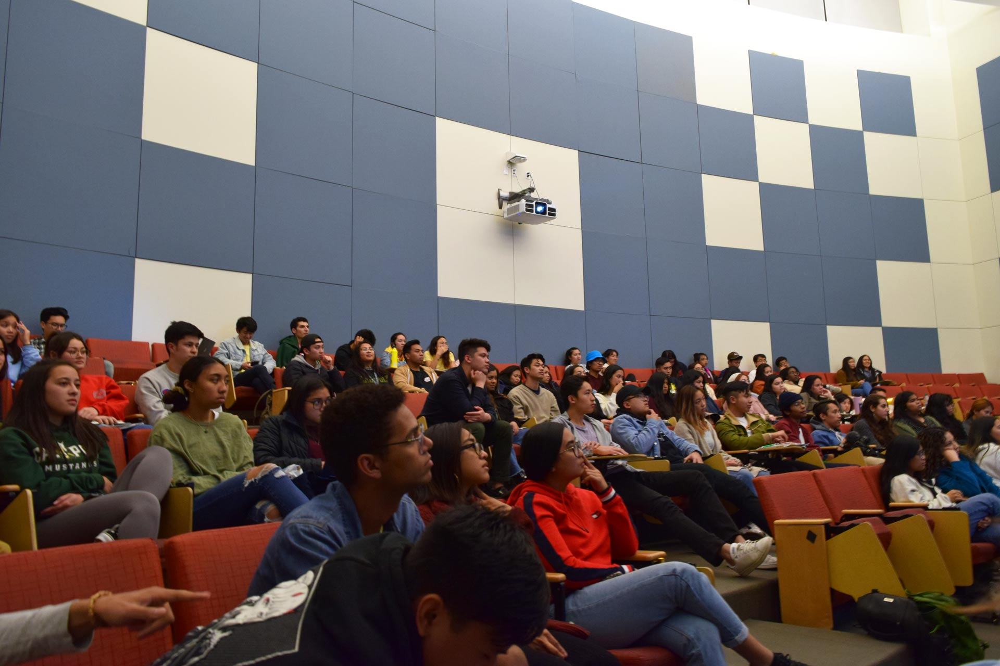
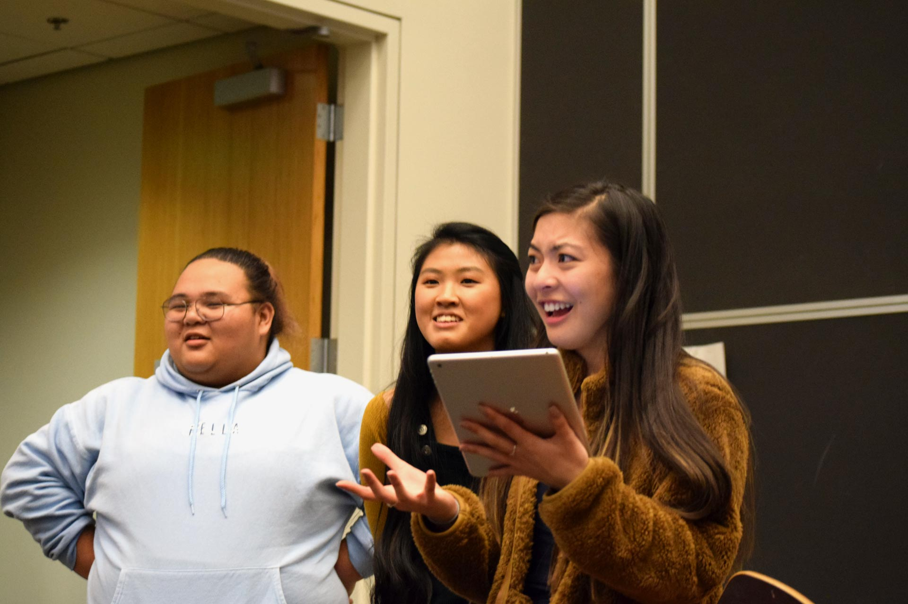
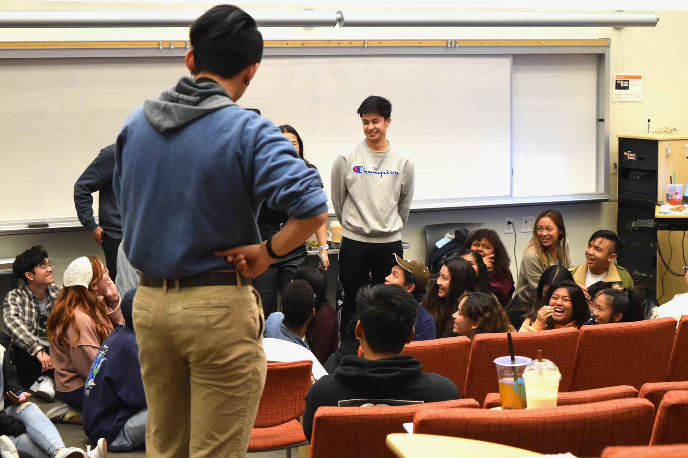
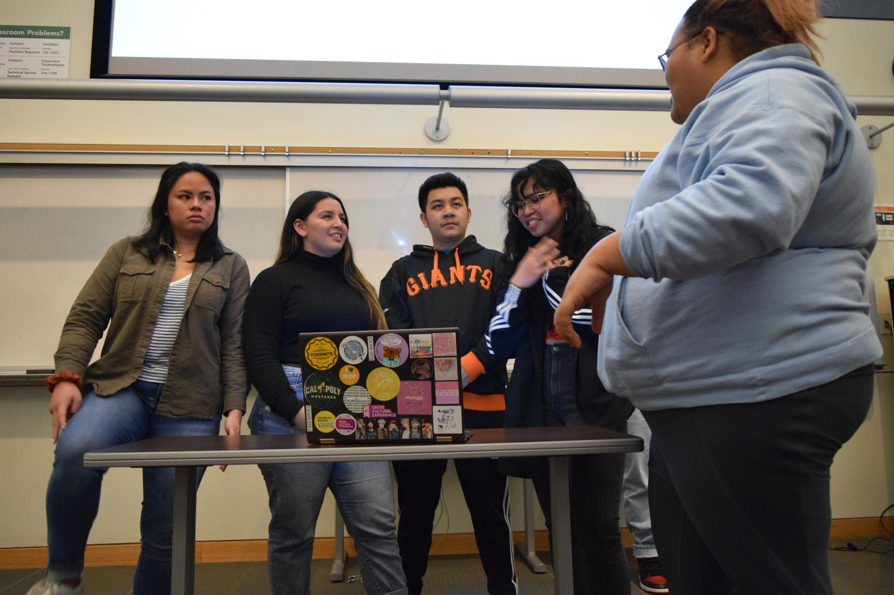
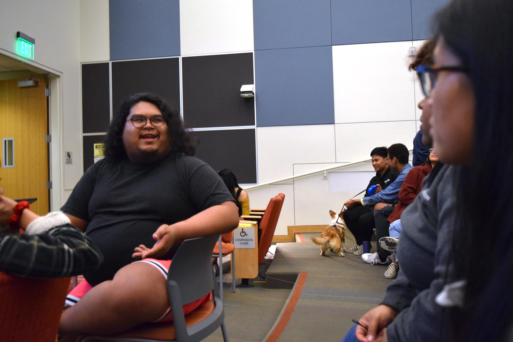
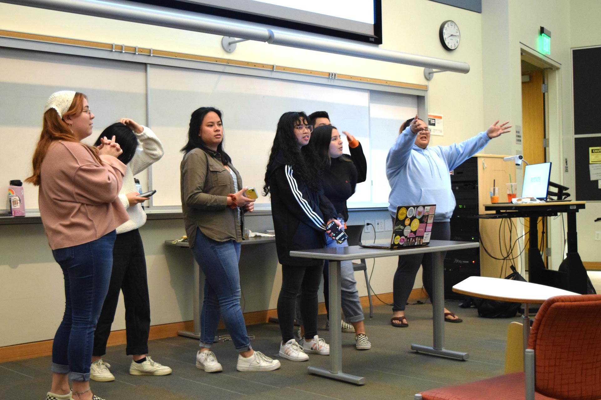
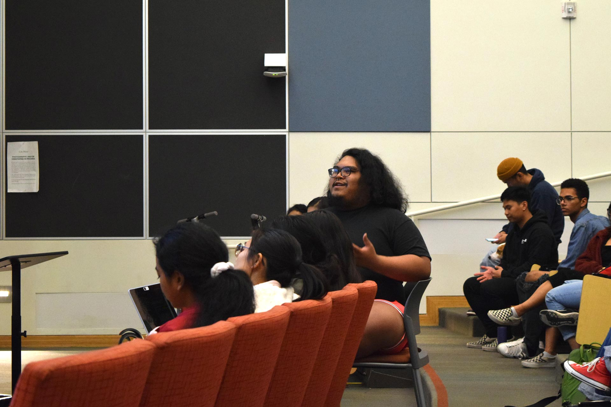
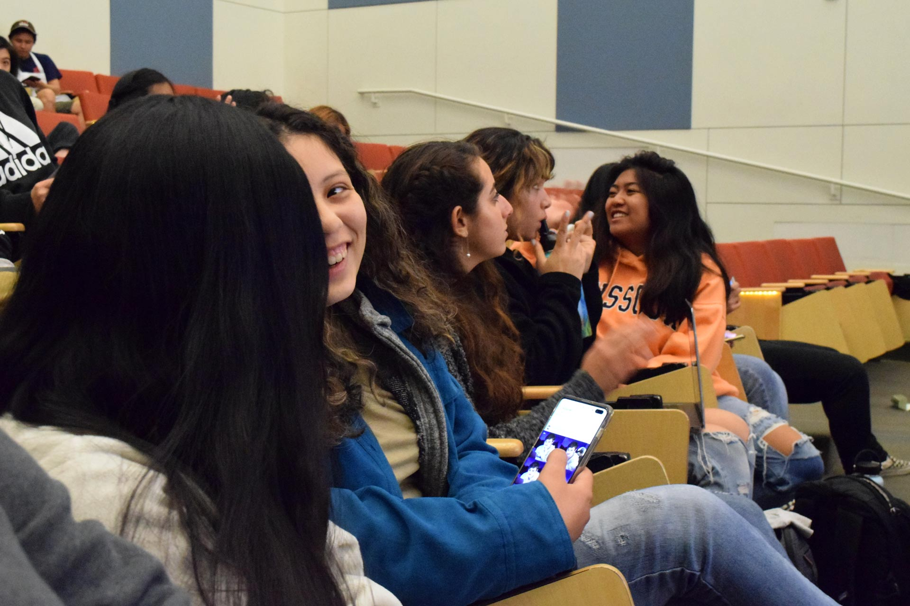
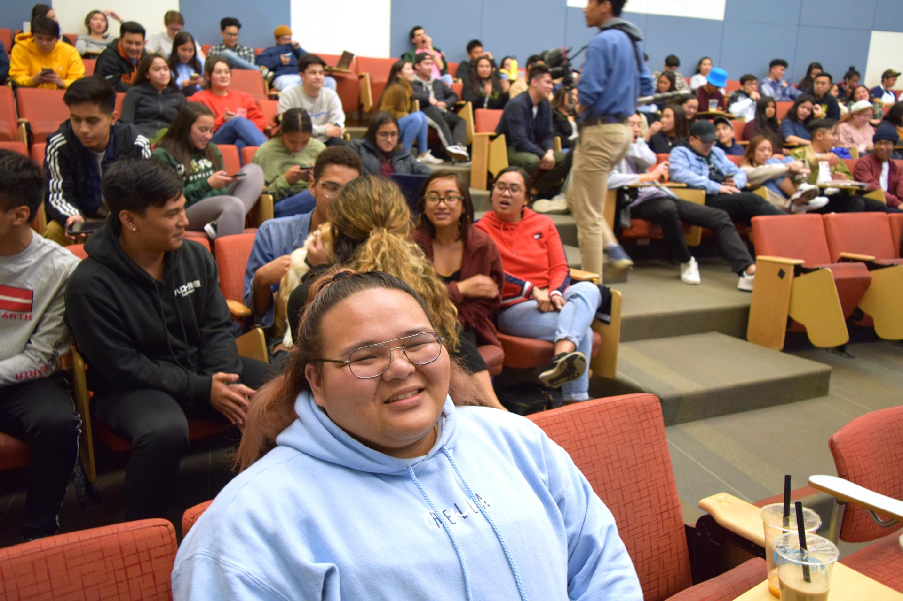

1 / 9

Baker 101, a typically silent room throughout the day, is filled with chatter as students fill in at 7p.m. The Pilipino Cultural Exchange Club holds in Pilipino Cultural Night Workshops in Baker every other Friday. PCE hosts PCN annually in the Performing Arts Center to showcase their culture and club members talent. There are three different aspects to PCN: script, modern and Kasayahn. Script includes a play in which participants are assigned lines and act, modern is a modern dance group and Kasayahn performs traditional Filipino dances. PCE members who chose to participate in PCE attend two weekly meetings for each aspect they pick along with a three hour workshop every Friday.
2 / 9

Pictured right to left Camille Lo Porciuncula, a biochemistry second year, Zen Tran a Liberal Arts and Engineering Studies third year, and Kristina Pimentel, a Biomedical Engineer fourth year, are in charge of organizing the different aspects of PCN. At each workshop, those who are participating in script are called to the front to do a script recap. Pimentel narrates while those in the scene stand and rehearse their lines.
3 / 9

“The recaps are my favorite part,” Jazmyn Gray, a third year Journalism major, said, “It’s less pressure than a real rehearsal.” Students sit on the ground, and are directed to stand up when their scene is introduced. The occasional delay causes a giggle in the club when the student eventually rises for their line.
4 / 9

Club members are expected to conduct presentations during the workshop about issues salient in the Filipino community. “We want to showcase to the members how the club came to be and the history behind the show,” Britney Lozano, a second year Chemistry major, said. The first presentation focused on labor brokerage in the Philippines. Using resources like Robyn Magalit Rodriguez’ “Toward a Critical Filipino Studies Approach to Philippine Migration” and the scenes from the filipino film “Anak,” they showed how families are affected.
5 / 9

The presenters allowed club members to discuss the topic with questions to guide their dialogue. “We just want people to be educated on what they’re getting involved with,” Lozano said. To Lozano the appreciation of the filipino culture is important, because she does not directly identify with it. “I look white, but I swear I’m Mexican,” she said, “I appreciate the safe space PCE has created for me, and I want to make sure I respect the experiences of everyone, even though that sounds cheesy.”
6 / 9

The story of Lola Pulido was shared with the club. She was a filipino slave that lived with the author of "My Family's Slave," Alex Tizon's family for over 53 years. She was never compensated for her work and faced physical and emotional abuse. “Some of the themes of our play focus on this type of story,” Lo Porciuncula said, “we want to highlight the struggles we’ve faced, and our resilience.”
7 / 9

Waves of snaps can be heard as the discussion opens to the entire club. Club members answered the question, “Do you believe Lola was a slave? Why or why not?” And “Why were Filipinos not as shocked as Westerners about the Tizon Family having someone like Lola in their household? What does this say about Filipino culture?” These questions offered a critical reflection of the Filipino culture and how it has changed since.
8 / 9

Club members chatted as the heavier presentations came to a close. “Workshops are a lot, but I enjoy being able to see my friends and catch up,” Gray said.
9 / 9

“PCE to me means a family,” Lo Poriuncula said,” I took this position because I wanted to give back to family.” PCN will continue holding its rehearsals and workshops throughout Winter Quarter until mid-April. “PCN is really one of those things that makes you say you’ll never do again, but when sign ups come around next year, I can't wait to sign up,” Gray said.
❮
❮
❯